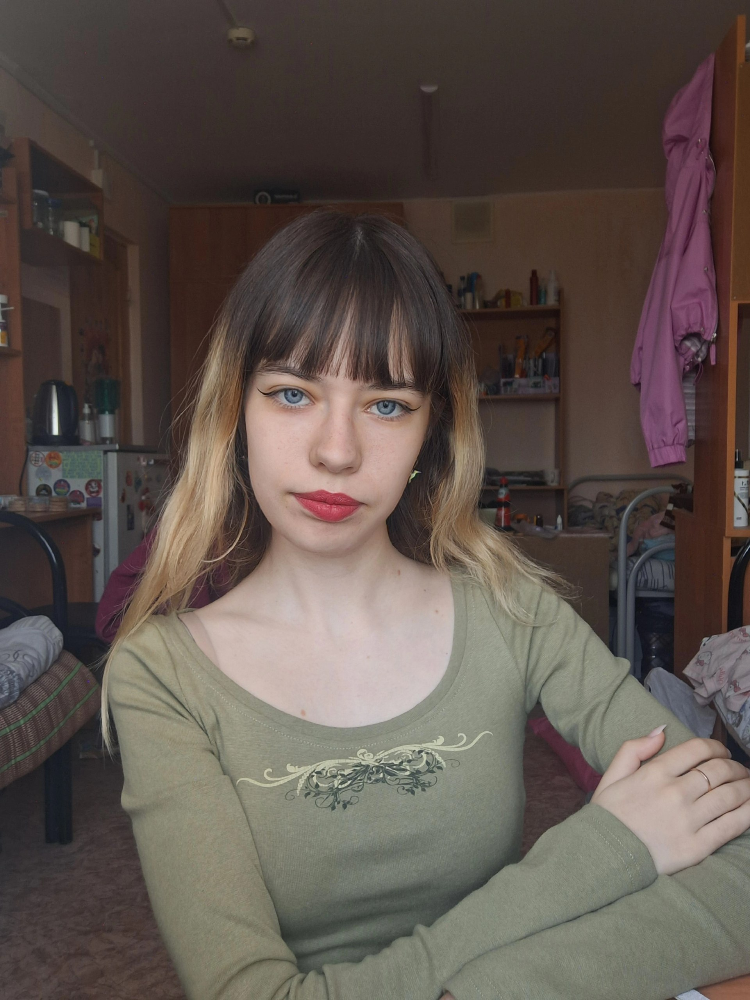

❤️
❤️
❤️
❤️
❤️
❤️
❤️
❤️
❤️
❤️
Романова Виктория Владимировна
Это я
Кратко обо мне:
Я Вика Романова, люблю читать китайские новеллы позитивные, ещё люблю гулять и кушать тарталетки с малиной или голубикой. Однажды каталась на слоне и мне потом подарили фоторамку из его какишей.
Я родилась в городе Вологда, там в целом классно, у меня есть кот и кошка и большая дакимакура с Сяо из геншина(без осуждений). Моя жизненная цель - пройти больше 500 тыс. шагов в месяц и узнать что об этом скажут шаги в вк ( пока получилось только 430к - это как обойти все метро в Токио).
Мои интересы:
- Рисовать
- Читать
- Гулять
- Пить айс латте и кушать том ям
Осторожно, здесь Кирилл!